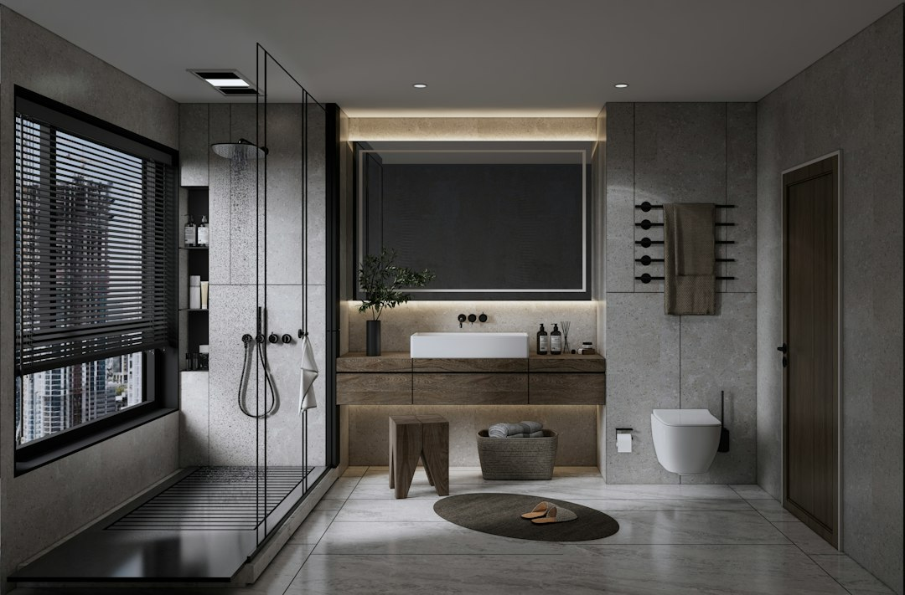
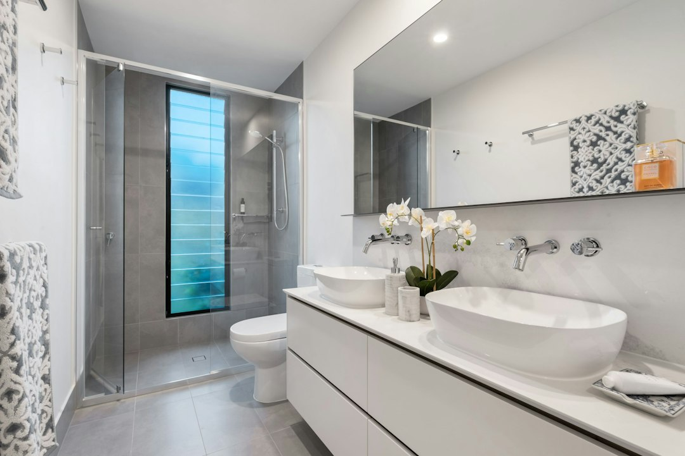
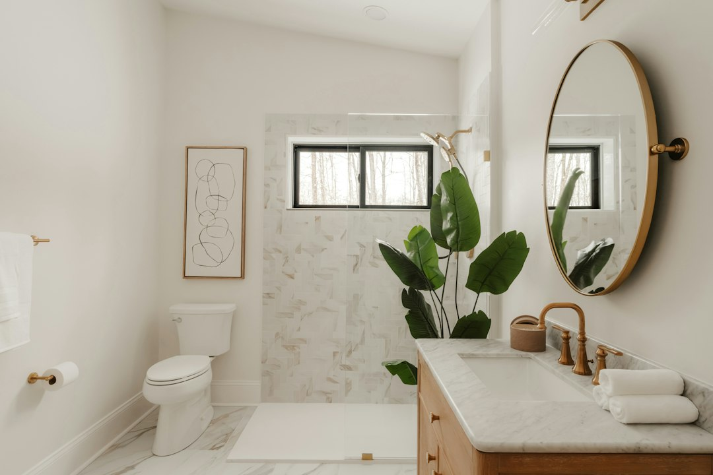
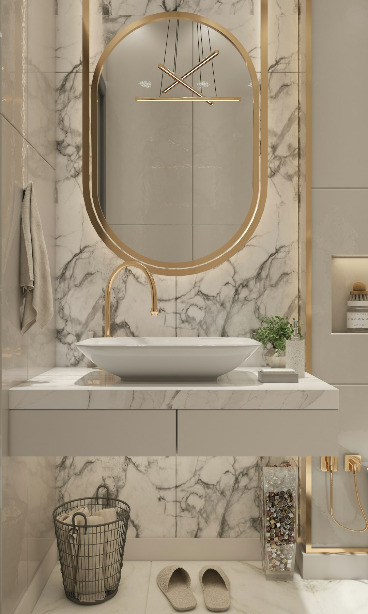
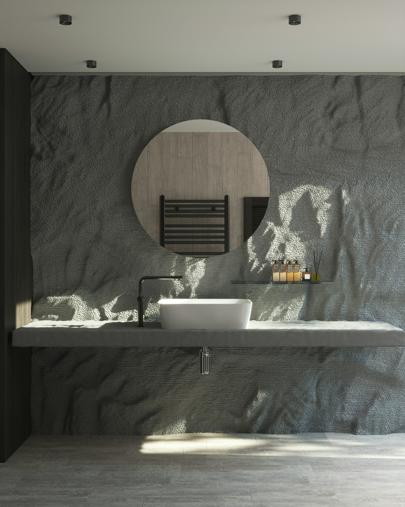

Toalettet er en nødvendig del av baderomsinnredningen, og dagens løsninger kombinerer funksjonalitet med et diskret design. Vegghengte toaletter er mye brukt i moderne baderom fordi de gir et ryddig uttrykk og gjør det enklere å vaske gulvet. Gulvstående toaletter kan være et praktisk alternativ ved oppgradering av eksisterende bad. Valg av toalett bør baseres på tilgjengelig plass, eksisterende avløpsløsning, vannforbruk og rengjøringsvennlighet. For vegghengte modeller må man også ta hensyn til innbyggingssisterne og nødvendige installasjonskrav.
Dusjen er en av de mest brukte delene av et baderom. Derfor bør dusjløsningen velges ut fra både tilgjengelig plass og hvordan badet brukes. Dusjkabinetter er et alternativ for dem som ønsker en separat dusjenhet, mens dusjhjørner med glassdører kan gi et mer åpent uttrykk. En walk-in-dusj passer godt på større baderom og kan kombineres med moderne dusjvegger og takdusj. For mindre baderom kan innfellbare dusjdører være en plassbesparende løsning. Hos Bad.no kan du finne dusjprodukter som passer til forskjellige baderomsstørrelser og innredningsstiler.
Materialvalg har også stor betydning for baderommets levetid og vedlikeholdsbehov. Fliser, porselen, glass og fuktbestandige møbelmaterialer brukes ofte fordi de tåler forholdene i et baderom når de er riktig valgt og montert. Store fliser kan gi et rolig uttrykk med færre fuger, mens mindre fliser kan brukes til å skape detaljer og mønstre. Overflater bør vurderes ut fra både design og rengjøringsbehov. På gulvet er sklisikkerhet spesielt relevant, mens veggmaterialer og membransystemer må være tilpasset våtrommets fuktbelastning.

Når man skal planlegge et nytt baderom, er det flere forhold som bør vurderes før man velger produkter. Rommets størrelse, plassering av vann- og avløpsinstallasjoner, ventilasjon og tilgjengelig gulvplass påvirker hvilke løsninger som egner seg best. Et lite baderom stiller andre krav til innredning enn et stort familiebad. Ved å velge baderomsmøbler, dusjløsninger og oppbevaringssystemer som passer til rommets utforming, kan man skape en praktisk planløsning uten å gå på kompromiss med design.
På større baderom kan man prioritere komfort og fleksibilitet. Doble servanter, romslige dusjområder, frittstående badekar og ekstra oppbevaringsskap kan gjøre baderommet mer praktisk for hele familien. Det kan også være aktuelt å dele rommet inn i ulike soner for dusj, toalett og personlig pleie. En slik inndeling kan gjøre det enklere for flere personer å bruke baderommet samtidig. Ved å kombinere funksjonelle produkter med en helhetlig fargepalett kan man skape et moderne og tidløst uttrykk.
Hos Bad.no kan planleggingen av et nytt baderom starte med å undersøke aktuelle produkter innen baderomsmøbler, servanter, dusjløsninger, badekar, toaletter, blandebatterier og baderomstilbehør. Ved å sammenligne dimensjoner, materialer, funksjoner og design blir det enklere å finne produkter som passer sammen. Et godt resultat avhenger ikke bare av hvordan baderommet ser ut, men også av kvaliteten på produktene, korrekt montering og hvor godt løsningene fungerer over tid.
Når du skal pusse opp et baderom, bør du vurdere om det er behov for en fullstendig renovering eller om mindre oppgraderinger er tilstrekkelige. Nye baderomsmøbler, et moderne speil, nye blandebatterier eller en oppgradert dusjløsning kan gi badet et nytt uttrykk uten at hele rommet må bygges om. Ved større baderomsrenoveringer må man ta hensyn til membran, sluk, ventilasjon og røropplegg. Arbeidet må utføres i samsvar med relevante norske byggeregler, blant annet kravene i byggteknisk forskrift TEK17. Det er viktig å bruke kvalifiserte fagfolk til arbeid som krever fagkompetanse.
Baderomsmøbler har stor betydning for både oppbevaring og det visuelle uttrykket på badet. Servantskap, høyskap, speilskap og vegghengte baderomsmøbler gir muligheter for å organisere håndklær, hygieneprodukter og andre nødvendigheter. Vegghengte servantskap er spesielt populære i moderne baderom fordi de frigjør gulvplass og gjør rengjøringen enklere. For større baderom kan doble servanter og brede baderomsmøbler være hensiktsmessige løsninger, særlig i husholdninger der flere personer bruker badet samtidig.
Et lite baderom kan bli både praktisk og moderne med riktig innredning. Smale servantskap, vegghengte toaletter, speilskap og kompakte dusjløsninger kan bidra til bedre plassutnyttelse. Lyse farger og store speil kan få rommet til å virke større, mens dusjvegger i klart glass gir et åpnere uttrykk. God oppbevaring er spesielt viktig på små baderom, der hver kvadratmeter bør brukes effektivt. Med gjennomtenkte løsninger kan selv et lite baderom få plass til det viktigste uten å virke overfylt.
Når du skal innrede et baderom, er det viktig å starte med en gjennomtenkt planløsning. Størrelsen på rommet, plasseringen av vannrør, avløp, dører og vinduer har betydning for hvilke produkter som passer best. Et lite baderom krever gjerne kompakte løsninger som gir god plassutnyttelse, mens et større baderom gir flere muligheter for separate dusjsoner, badekar og ekstra oppbevaring. Ved å planlegge innredningen nøye kan du få et baderom som både ser bra ut og fungerer godt i hverdagen.


Små baderom kan innredes effektivt med kompakte servantskap, smale høyskap, hjørnedusjer og speil med integrert oppbevaring. Lyse overflater og glassvegger kan bidra til at rommet oppleves større, mens vegghengte løsninger gir et mer åpent gulvareal. I større baderom finnes det flere muligheter for å kombinere doble servanter, separate dusjsoner, badekar og ekstra oppbevaring. Uansett størrelse bør det være tilstrekkelig bevegelsesplass mellom de forskjellige funksjonene.
Baderomsbelysning har mye å si for hvordan rommet oppleves. God belysning gjør daglige rutiner som barbering, sminking og personlig pleie enklere. Speil med integrert LED-belysning er et populært valg fordi de kombinerer praktisk funksjon med moderne design. Takbelysning gir generell belysning i rommet, mens ekstra lys ved servant og speil kan forbedre funksjonaliteten. På baderom må elektriske installasjoner være tilpasset våtrom og oppfylle gjeldende sikkerhetskrav. Elektrisk installasjonsarbeid skal utføres av registrerte elektrovirksomheter.
Valg av servant er en annen viktig del av baderomsinnredningen. Servanter finnes i ulike former, størrelser og materialer, fra klassiske porselensservanter til moderne toppmonterte servanter. En nedfelt servant kan gi et helhetlig uttrykk sammen med servantskapet, mens en frittstående bolleservant ofte brukes som et dekorativt element. Hos Bad.no kan kunder utforske forskjellige løsninger for å finne en servant som passer til ønsket baderomsdesign, tilgjengelig plass og praktiske behov.
Et funksjonelt baderom skal dekke behovene til dem som bruker det, samtidig som det er enkelt å vedlikeholde og behagelig å oppholde seg i. Enten man ønsker et moderne baderom med minimalistiske detaljer, et tradisjonelt familiebad eller en plassbesparende løsning til en mindre bolig, finnes det mange muligheter for å tilpasse innredningen. Med et bredt utvalg av baderomsprodukter fra Bad.no kan man planlegge en helhetlig løsning der komfort, kvalitet og design inngår som naturlige deler av baderommet.
Baderomsmøbler er en sentral del av innredningen og har stor betydning for både oppbevaring og utseende. Et servantskap gir praktisk plass til håndklær, toalettartikler og rengjøringsprodukter, samtidig som det bidrar til et ryddig uttrykk. Vegghengte baderomsmøbler er populære fordi de frigjør gulvplass og gjør rengjøringen enklere. For større baderom kan et bredt servantskap med dobbel servant være en god løsning, spesielt for familier der flere bruker badet samtidig. Hos Bad.no finnes det ulike typer baderomsmøbler som kan kombineres med speil, høyskap og annet baderomstilbehør.
Materialer og overflater har stor betydning for både vedlikehold og holdbarhet. Fliser er et vanlig valg på baderom fordi de finnes i mange størrelser, farger og mønstre. Store fliser kan gi et rolig og moderne uttrykk, mens mindre fliser egner seg godt til detaljer og områder med spesielle former. Baderomsmøbler bør være produsert av materialer som er beregnet for fuktige omgivelser. Glass, porselen og rustbestandige materialer er også mye brukt i moderne baderomsinnredning. Riktig rengjøring og vedlikehold bidrar til å bevare produktenes utseende over tid.


Baderomstilbehør er med på å gjøre rommet komplett. Håndkleholdere, toalettpapirholdere, kroker, såpedispensere og dusjhyller er små detaljer som har stor betydning i daglig bruk. Tilbehør i samme overflate som blandebatterier og dusjutstyr kan gi baderommet et mer enhetlig design. Det er også viktig å tenke på plassering, slik at håndklær, hygieneprodukter og andre nødvendigheter er lett tilgjengelige.
Et godt dusjbatteri bidrar til en behagelig dusjopplevelse og gjør det enkelt å regulere vannmengde og temperatur. Termostatbatterier er populære fordi de bidrar til å holde en jevn vanntemperatur. Takdusjer, hånddusjer og komplette dusjsett finnes i ulike utførelser, blant annet krom, matt sort og børstet metall. Ved å velge blandebatterier og dusjutstyr i samme farge og stil kan du skape et mer gjennomført baderom. Det er samtidig viktig å undersøke at produktene passer til eksisterende vanninstallasjoner.
For mange er badekar en ønsket del av baderommet. Et badekar gir mulighet for avslapning og kan samtidig være praktisk for familier med små barn. Frittstående badekar passer ofte best i romslige baderom, mens innebygde badekar kan være mer plassbesparende. På mindre bad kan et kombinert badekar og dusjområde være et godt alternativ. Når du velger badekar, bør du vurdere størrelse, dybde, materialer og hvor mye plass som er tilgjengelig rundt karet. Riktig plassering gjør det enklere å bruke og rengjøre baderommet.